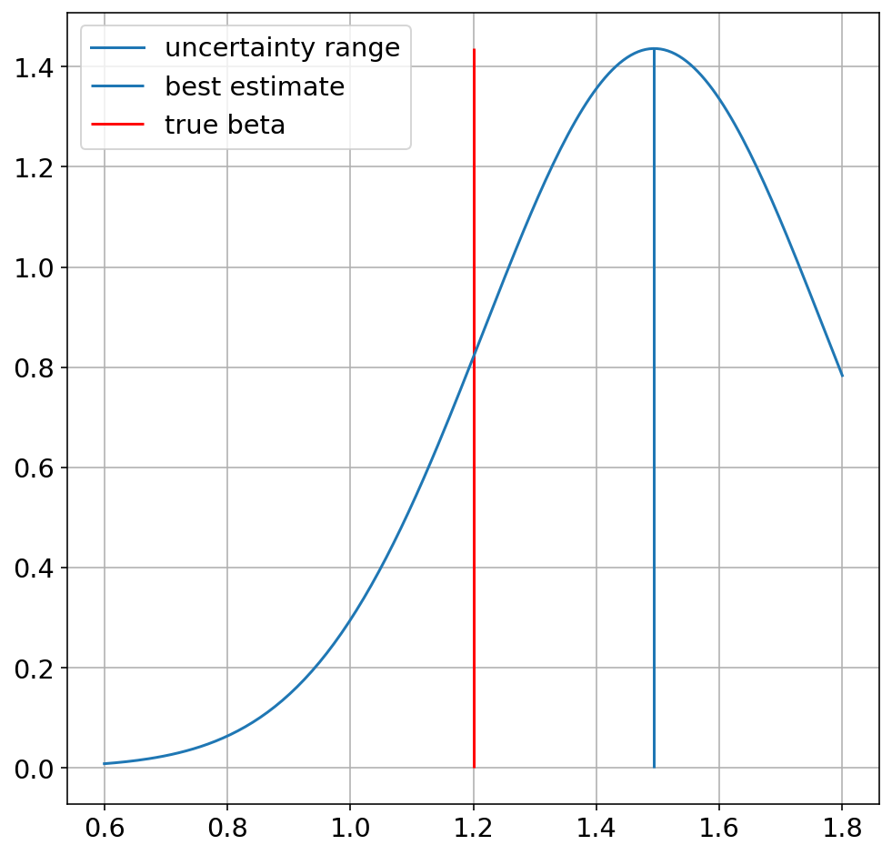

Regression¶
%reset
import numpy as np
import matplotlib.pyplot as plt
from scipy import stats
import pandas as pd
from sklearn.linear_model import LinearRegression
import statsmodels.api as sm
from statsmodels.stats.outliers_influence import summary_table
# These are some parameters to make figures nice (and big)
%matplotlib inline
%config InlineBackend.figure_format = 'retina'
plt.rcParams['figure.figsize'] = 16,8
params = {'legend.fontsize': 'x-large',
'figure.figsize': (15, 5),
'axes.labelsize': 'x-large',
'axes.titlesize':'x-large',
'xtick.labelsize':'x-large',
'ytick.labelsize':'x-large'}
plt.rcParams.update(params)
Once deleted, variables cannot be recovered. Proceed (y/[n])? y
# Define the true process
nsample = 100
beta_true = np.array([10, 1])
var_eps=3
# generate data
x = np.linspace(0, 10, nsample)
e = stats.norm(loc=0,scale=var_eps).rvs(size=nsample)
#e = stats.cauchy(loc=0,scale=1).rvs(size=nsample)
y_true=np.dot(X, beta_true)
y = y_true + e
print('R2_true=',np.var(y_true)/(np.var(y_true)+var_eps))
print('beta_0=',beta_true[0],', beta_1=',beta_true[1])
print(res.summary())
fig,ax=plt.subplots(1,1,figsize=[12,12])
ax.plot(x,y,'o')
ax.set_xlabel('x')
ax.set_ylabel('y')
# Define the true process
nsample = 100
beta_true = np.array([10, 1])
var_eps=3
x = np.linspace(0, 10, nsample)
e = stats.norm(loc=0,scale=var_eps).rvs(size=nsample)
X = sm.add_constant(x)
y_true=np.dot(X, beta_true)
y = y_true + e
---------------------------------------------------------------------------
NameError Traceback (most recent call last)
<ipython-input-2-af383e2d5e1b> in <module>
8 e = stats.norm(loc=0,scale=var_eps).rvs(size=nsample)
9 #e = stats.cauchy(loc=0,scale=1).rvs(size=nsample)
---> 10 y_true=np.dot(X, beta_true)
11 y = y_true + e
12
NameError: name 'X' is not defined
# Define the true process
nsample = 100
beta_true = np.array([10, 1.2])
var_eps=3
# generate data
x = np.linspace(0, 10, nsample)
#e = stats.norm(loc=0,scale=var_eps).rvs(size=nsample)
e = stats.cauchy(loc=0,scale=0.5).rvs(size=nsample)
X = sm.add_constant(x)
y_true=np.dot(X, beta_true)
y = y_true + e
print('R2_true=',np.var(y_true)/(np.var(y_true)+var_eps))
print('beta_0=',beta_true[0],', beta_1=',beta_true[1])
model = sm.OLS(y, X)
res = model.fit()
print(res.summary())
st, data, ss2 = summary_table(res, alpha=0.05)
fittedvalues = data[:,2]
predict_mean_se = data[:,3]
predict_mean_ci_low, predict_mean_ci_upp = data[:,4:6].T
predict_ci_low, predict_ci_upp = data[:,6:8].T
fig,ax=plt.subplots(1,1,figsize=[12,12])
pred_ols = res.get_prediction()
#iv_l = pred_ols.summary_frame()["obs_ci_lower"]
#iv_u = pred_ols.summary_frame()["obs_ci_upper"]
ax.plot(x, y,'o', label="data")
ax.plot(x, y_true, "b-", label="True")
ax.plot(x, fittedvalues, 'r-', label='OLS')
ax.plot(x, predict_ci_low, 'r--')
ax.plot(x, predict_ci_upp, 'r--',label='5-95% ci on values')
ax.plot(x, predict_ci_upp, 'r--')
ax.plot(x, predict_mean_ci_low, 'r:',label='5-95% ci on mean')
ax.plot(x, predict_mean_ci_upp, 'r:')
ax.legend(loc="best")
R2_true= 0.8031809145129225
beta_0= 10.0 , beta_1= 1.2
OLS Regression Results
==============================================================================
Dep. Variable: y R-squared: 0.320
Model: OLS Adj. R-squared: 0.313
Method: Least Squares F-statistic: 46.05
Date: Fri, 17 Sep 2021 Prob (F-statistic): 8.85e-10
Time: 09:37:00 Log-Likelihood: -315.00
No. Observations: 100 AIC: 634.0
Df Residuals: 98 BIC: 639.2
Df Model: 1
Covariance Type: nonrobust
==============================================================================
coef std err t P>|t| [0.025 0.975]
------------------------------------------------------------------------------
const 9.3679 1.132 8.274 0.000 7.121 11.615
x1 1.3275 0.196 6.786 0.000 0.939 1.716
==============================================================================
Omnibus: 136.389 Durbin-Watson: 2.012
Prob(Omnibus): 0.000 Jarque-Bera (JB): 7253.045
Skew: 4.424 Prob(JB): 0.00
Kurtosis: 43.773 Cond. No. 11.7
==============================================================================
Notes:
[1] Standard Errors assume that the covariance matrix of the errors is correctly specified.
<matplotlib.legend.Legend at 0x7fc202a0bee0>
fig,ax=plt.subplots(1,1,figsize=[8,8])
x=np.linspace(0.2,1,200)
beta_hat=res.params[1]
pdf=stats.norm.pdf(x,loc=beta_hat,scale=res.bse[1])
ax.plot(x,pdf,label='uncertainty range')
ax.vlines(beta_hat,0,np.max(pdf),label='best estimate')
ax.vlines(beta_true[1],0,np.max(pdf),'r',label='true beta')
ax.legend()
ax.grid()

Ndraws=100000
q=np.zeros(Ndraws)
for n in range(Ndraws):
# generate data
x = np.linspace(0, 10, nsample)
#e = stats.norm(loc=0,scale=var_eps).rvs(size=nsample)
e = stats.cauchy(loc=0,scale=1).rvs(size=nsample)
X = sm.add_constant(x)
y_true=np.dot(X, beta_true)
y = y_true + e
model = sm.OLS(y, X)
res = model.fit()
beta_hat=res.params[1]
stderr=res.bse[1]
q[n]=stats.norm.cdf(beta_true[1], loc=beta_hat, scale=stderr)
np.shape(q[q<0.05])[0]/Ndraws*100
4.625
Ndraws=1000
q=np.zeros(Ndraws)
beta_true[1]=0
for n in range(Ndraws):
# generate data
x = np.linspace(0, 10, nsample)
e = stats.norm(loc=0,scale=20).rvs(size=nsample)
#e = stats.cauchy(loc=0,scale=1).rvs(size=nsample)
X = sm.add_constant(x)
y_true=np.dot(X, beta_true)
y = y_true + e
model = sm.OLS(y, X)
res = model.fit()
beta_hat=res.params[1]
stderr=res.bse[1]
q[n]=beta_hat
q
# Define the true process
nsample = 30
beta_true = np.array([10, 0])
var_eps=3
# generate data
x = np.linspace(0, 10, nsample)
e = stats.norm(loc=0,scale=var_eps).rvs(size=nsample)
#e = stats.cauchy(loc=0,scale=1).rvs(size=nsample)
X = sm.add_constant(x)
y_true=np.dot(X, beta_true)
y = y_true + e
print('R2_true=',np.var(y_true)/(np.var(y_true)+var_eps))
print('beta_0=',beta_true[0],', beta_1=',beta_true[1])
model = sm.OLS(y, X)
res = model.fit()
#print(res.summary())
st, data, ss2 = summary_table(res, alpha=0.05)
fittedvalues = data[:,2]
predict_mean_se = data[:,3]
predict_mean_ci_low, predict_mean_ci_upp = data[:,4:6].T
predict_ci_low, predict_ci_upp = data[:,6:8].T
fig,ax=plt.subplots(1,1,figsize=[12,12])
pred_ols = res.get_prediction()
#iv_l = pred_ols.summary_frame()["obs_ci_lower"]
#iv_u = pred_ols.summary_frame()["obs_ci_upper"]
ax.plot(x, y,'o', label="data")
ax.plot(x, y_true, "b-", label="True")
ax.plot(x, fittedvalues, 'r-', label='OLS')
ax.plot(x, predict_ci_low, 'r--')
ax.plot(x, predict_ci_upp, 'r--',label='5-95% ci on values')
ax.plot(x, predict_ci_upp, 'r--')
ax.plot(x, predict_mean_ci_low, 'r:',label='5-95% ci on mean')
ax.plot(x, predict_mean_ci_upp, 'r:')
ax.legend(loc="best")
R2_true= 0.0
beta_0= 10 , beta_1= 0
<matplotlib.legend.Legend at 0x7fc223ab6e50>
Ndraws=10000
q=np.zeros(Ndraws)
beta_true[1]=0
for n in range(Ndraws):
# generate data
x = np.linspace(0, 10, nsample)
e = stats.norm(loc=0,scale=20).rvs(size=nsample)
#e = stats.cauchy(loc=0,scale=1).rvs(size=nsample)
X = sm.add_constant(x)
y_true=np.dot(X, beta_true)
y = y_true + e
model = sm.OLS(y, X)
res = model.fit()
beta_hat=res.params[1]
stderr=res.bse[1]
q[n]=beta_hat
plt.hist(q,50)
(array([ 1., 1., 2., 5., 4., 7., 16., 22., 28., 45., 53.,
71., 105., 124., 169., 208., 260., 318., 345., 397., 481., 541.,
595., 594., 610., 593., 545., 618., 536., 478., 379., 391., 309.,
286., 191., 170., 140., 106., 69., 66., 39., 28., 18., 15.,
9., 0., 3., 8., 0., 1.]),
array([-4.64795961, -4.46257216, -4.27718471, -4.09179726, -3.90640981,
-3.72102236, -3.53563491, -3.35024746, -3.16486001, -2.97947256,
-2.79408511, -2.60869766, -2.42331021, -2.23792276, -2.0525353 ,
-1.86714785, -1.6817604 , -1.49637295, -1.3109855 , -1.12559805,
-0.9402106 , -0.75482315, -0.5694357 , -0.38404825, -0.1986608 ,
-0.01327335, 0.1721141 , 0.35750155, 0.542889 , 0.72827646,
0.91366391, 1.09905136, 1.28443881, 1.46982626, 1.65521371,
1.84060116, 2.02598861, 2.21137606, 2.39676351, 2.58215096,
2.76753841, 2.95292586, 3.13831331, 3.32370076, 3.50908821,
3.69447567, 3.87986312, 4.06525057, 4.25063802, 4.43602547,
4.62141292]),
<BarContainer object of 50 artists>)
nsample=10
Ndraws=10000
q=np.zeros(Ndraws)
for n in range(Ndraws):
e1 = stats.norm(loc=0,scale=10).rvs(size=nsample)
e2 = stats.norm(loc=0,scale=10).rvs(size=nsample)
q[n]=np.mean(e1)-np.mean(e2)
plt.hist(q,50)
q